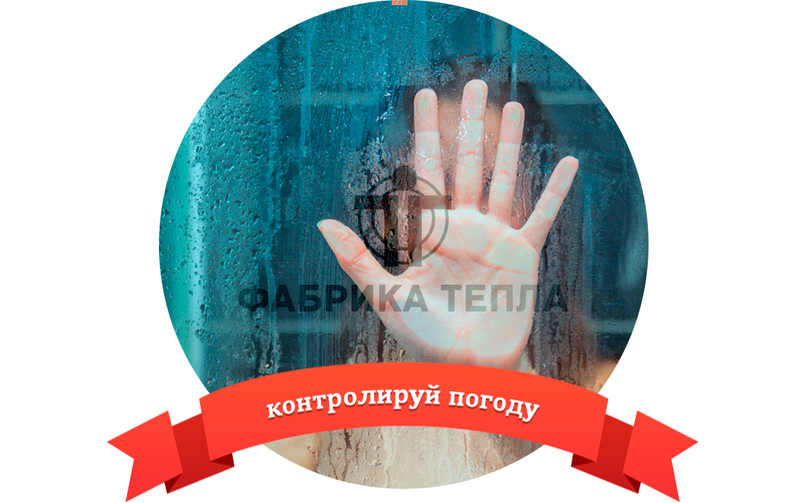
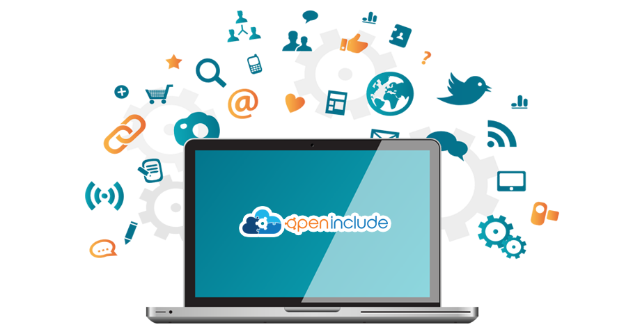

<!DOCTYPE html>
<!-- saved from url=(0028)http://makeomatic.ru/#ArkApi -->
<html class=" js flexbox canvas canvastext webgl no-touch geolocation postmessage websqldatabase indexeddb hashchange history draganddrop websockets rgba hsla multiplebgs backgroundsize borderimage borderradius boxshadow textshadow opacity cssanimations csscolumns cssgradients cssreflections csstransforms csstransforms3d csstransitions fontface generatedcontent video audio localstorage sessionstorage webworkers applicationcache svg inlinesvg smil svgclippaths">

<head> <meta charset="utf-8"> <title>Makeomatic: Создание сайтов в Москве, разработка мобильных приложений, дизайн</title> <meta name="description" content="Агентство Makeomatic с радостью воплотит в жизнь Ваши идеи! Создание сайтов в Москве, разработка мобильных приложений, дизайна, UX и игр являются нашей основной специализацией."> <meta name="viewport" content="width=device-width, initial-scale=1, maximum-scale=1"> <link type="application/atom+xml" rel="alternate" href="/blog/atom.xml"> <link rel="alternate" hreflang="x-default" href="http://en.makeomatic.ru/"> <link rel="alternate" hreflang="ru" href="http://makeomatic.ru/"> <!-- For third-generation iPad with high-resolution Retina display: --> <link rel="apple-touch-icon-precomposed" sizes="144x144" href="/apple-touch-icon-144x144-precomposed.png"> <!-- For iPhone with high-resolution Retina display running iOS ≥ 7: --> <link rel="apple-touch-icon-precomposed" sizes="120x120" href="/apple-touch-icon-120x120-precomposed.png"> <!-- For iPhone with high-resolution Retina display running iOS ≤ 6: --> <link rel="apple-touch-icon-precomposed" sizes="114x114" href="/apple-touch-icon-114x114-precomposed.png"> <!-- For first- and second-generation iPad: --> <link rel="apple-touch-icon-precomposed" sizes="72x72" href="/apple-touch-icon-72x72-precomposed.png"> <!-- For non-Retina iPhone, iPod Touch, and Android 2.1+ devices: --> <link rel="apple-touch-icon-precomposed" href="/apple-touch-icon-precomposed.png">  <link rel="stylesheet" href="/css/app.min.1.9.59.css">  <script type="text/javascript" async="" src="//doug1izaerwt3.cloudfront.net/6cfbedfa723f34d6a0f6bb03a6309160c601ec0c.1.js"></script><script type="text/javascript" async="" src="//i.kissmetrics.com/i.js"></script><script async="" src="//www.google-analytics.com/analytics.js"></script><script type="text/javascript" async="" src="http://mc.yandex.ru/metrika/watch.js"></script><script src="/js/vendor/modernizr-2.6.2-respond-1.1.0.min.js"></script><style id="clearly_highlighting_css" type="text/css">/* selection */ html.clearly_highlighting_enabled ::-moz-selection { background: rgba(246, 238, 150, 0.99); } html.clearly_highlighting_enabled ::selection { background: rgba(246, 238, 150, 0.99); } /* cursor */ html.clearly_highlighting_enabled {    /* cursor and hot-spot position -- requires a default cursor, after the URL one */    cursor: url("chrome-extension://pioclpoplcdbaefihamjohnefbikjilc/clearly/images/highlight--cursor.png") 14 16, text; } /* highlight tag */ em.clearly_highlight_element {    font-style: inherit !important; font-weight: inherit !important;    background-image: url("chrome-extension://pioclpoplcdbaefihamjohnefbikjilc/clearly/images/highlight--yellow.png");    background-repeat: repeat-x; background-position: top left; background-size: 100% 100%; } /* the delete-buttons are positioned relative to this */ em.clearly_highlight_element.clearly_highlight_first { position: relative; } /* delete buttons */ em.clearly_highlight_element a.clearly_highlight_delete_element {    display: none; cursor: pointer;    padding: 0; margin: 0; line-height: 0;    position: absolute; width: 34px; height: 34px; left: -17px; top: -17px;    background-image: url("chrome-extension://pioclpoplcdbaefihamjohnefbikjilc/clearly/images/highlight--delete-sprite.png"); background-repeat: no-repeat; background-position: 0px 0px; } em.clearly_highlight_element a.clearly_highlight_delete_element:hover { background-position: -34px 0px; } /* retina */ @media (min--moz-device-pixel-ratio: 2), (-webkit-min-device-pixel-ratio: 2), (min-device-pixel-ratio: 2) {    em.clearly_highlight_element { background-image: url("chrome-extension://pioclpoplcdbaefihamjohnefbikjilc/clearly/images/highlight--yellow@2x.png"); }    em.clearly_highlight_element a.clearly_highlight_delete_element { background-image: url("chrome-extension://pioclpoplcdbaefihamjohnefbikjilc/clearly/images/highlight--delete-sprite@2x.png"); background-size: 68px 34px; } } </style><style>[touch-action="none"]{ -ms-touch-action: none; touch-action: none; }[touch-action="pan-x"]{ -ms-touch-action: pan-x; touch-action: pan-x; }[touch-action="pan-y"]{ -ms-touch-action: pan-y; touch-action: pan-y; }[touch-action="scroll"],[touch-action="pan-x pan-y"],[touch-action="pan-y pan-x"]{ -ms-touch-action: pan-x pan-y; touch-action: pan-x pan-y; }</style>

	<link rel="stylesheet" href="css/vendor/style.css">
	<script src="js/vendor/jquery.js"></script>
	<script src="js/vendor/jquery.bxslider.min.js"></script>
	<script src="js/script.js"></script>
</head>

<header class="navbar navbar-inverse navbar-fixed-top"> 
	<div class="navbar-inner"> 
		<div class="container"> 
			<div class="social-desktop">
				<a class="fcb" href="https://www.facebook.com/makeomatic"><i class="fa fa-facebook"></i> </a>
				<a class="vk" href="http://vk.com/makeomatic"> <i class="fa fa-vk"></i> </a>
				<a class="twt" href="https://twitter.com/MakeOmatic"> <i class="fa fa-twitter"></i> </a> 
			</div> 
			<a class="btn btn-navbar" data-toggle="collapse" data-target=".nav-collapse"> 
				<span class="icon-bar"></span> <span class="icon-bar"></span> 
				<span class="icon-bar"></span> 
			</a> 
			<a class="brand" href="#">makeomatic</a> 
			<div class="nav-collapse collapse"> 
				<ul class="nav">   
					<li class=" "><a href="/blog"> Блог  </a>  </li>
					<li class="dropdown"> 
						<a href="/team" data-target="#" class="dropdown-toggle" data-toggle="dropdown">Команда  <b class="caret"></b>  </a>  
						<ul class="dropdown-menu">
							<li> <a href="/team#vyacheslavgusev">Вячеслав Гусев</a> </li>
							<li> <a href="/team#vitaliiaminev">Виталий Аминев</a></li>
							<li> <a href="/team#annaamineva">Анна Аминева</a> </li>
							<li> <a href="/team#romannesterov">Роман Нестеров</a> </li>
							<li> <a href="/team#aleksandrkremenets">Александр Кременец</a> </li>
							<li> <a href="/team#dmitriigorbunov">Дмитрий Горбунов</a> </li>
							<li> <a href="/team#alekseiknyazev">Алексей Князев</a> </li>
							<li> <a href="/team#dmitriishebaldin">Дмитрий Шебалдин</a> </li>
						</ul>  
					</li>
					<li class=""> <a href="#about"> О нас  </a>  </li>
					<li class="dropdown active"> <a href="#portfolio" data-target="#" class="dropdown-toggle" data-toggle="dropdown"> Портфолио  <b class="caret"></b>  </a>  
						<ul class="dropdown-menu">
							<li class=""> <a href="#ArkApi">ArkApi</a> </li>
							<li class=""> <a href="#Recordi">Recordi</a> </li>
							<li class=""> <a href="#Photobot">Photobot</a> </li>
							<li class=""> <a href="#BrainsApp">BrainsApp</a> </li>
							<li class=""> <a href="#FabrikaTepla">FabrikaTepla</a> </li>
							<li class=""> <a href="#SpeakGeo">SpeakGeo</a> </li>
							<li class=""> <a href="#OpenInclude">OpenInclude</a> </li>
							<li class="active"> <a href="#LIVEONE">LIVEONE</a> </li>
							<li class=""> <a href="#FitCafe">FitCafe</a> </li>
						</ul>
					</li>
					<li class=""> <a href="#tech"> Технологии  </a>  </li>
					<li class=""> <a href="#contacts"> Контакты  </a>  </li>  
				</ul> 
			</div><!--/.nav-collapse --> 
			<div class="send-brief"> 
				<a href="#brief" role="button" data-toggle="modal"> <i class="background"></i> <span>Заполнить бриф</span> </a>
			</div>
			<h4 class="phone-desktop"> Звоните: +7 (495) 79-222-44 </h4> </div> </div>
		</header>
		<div class="icon-up visible-desktop" id="up" title="наверх" style="top: 0px; opacity: 1;"></div>
		<div class="switch-language">
			<a href="http://makeomatic.ru/" class="language-icon language-ru"></a>
			<a href="http://en.makeomatic.ru/" class="language-icon language-en"></a>
		</div>

<section class="project-carousel row">
	<div class="container">
		<!-- Projects Carousel -->
		<ul class="bx-slider js-bxslider">
			<li>
				<a href="#">
					<span class="project-carousel_img"></span>
					<span class="project-carousel_title">Arkapi</span>
				</a>
			</li>
			<li>
				<a href="#">
					<span class="project-carousel_img"></span>
					<span class="project-carousel_title">BrainsApp</span>
				</a>
			</li>
			<li>
				<a href="#">
					<span class="project-carousel_img"></span>
					<span class="project-carousel_title">Fabrika</span>
				</a>
			</li>
			<li>
				<a href="#">
					<span class="project-carousel_img"></span>
					<span class="project-carousel_title">FitCafe</span>
				</a>
			</li>
			<li>
				<a href="#">
					<span class="project-carousel_img"></span>
					<span class="project-carousel_title">LiveONE</span>
				</a>
			</li>
			<li>
				<a href="#">
					<span class="project-carousel_img"></span>
					<span class="project-carousel_title">OpenInclude</span>
				</a>
			</li>
			<li>
				<a href="#">
					<span class="project-carousel_img"></span>
					<span class="project-carousel_title">PhotoBot</span>
				</a>
			</li>
			<li>
				<a href="#">
					<span class="project-carousel_img"></span>
					<span class="project-carousel_title">Recordi</span>
				</a>
			</li>
			<li>
				<a href="#">
					<span class="project-carousel_img"></span>
					<span class="project-carousel_title">SpeakGeo</span>
				</a>
			</li>
		</ul>
		<!-- /Projects Carousel -->
	
	</div>
</section>

<section class="blog-post container">
		<div class="blog-post_img">
			
		</div>
		<h1>IntelliSense</h1>
		<div class="tags row">
			<ul>
				<li class="tag"><span>caйт под ключ</span></li>
				<li class="tag"><span>веб-приложение</span></li>
			</ul>
		</div>

		<div class="blog-post_cnt">
			<h4 class="heading-icon heading-icon__handshake">Красивый маркетинговый сайт под ключ и веб-приложение <br> для серьезного заказчика</h4>
			<p>Очередной заказчик, который к нам обратился, оказался из г. Кембридж. Причем, новый заказ можно было расценивать не иначе как вызов. Английская компания AquaMW относится к категории IOT (Интернет вещей) и занимается мониторингом расхода воды и электроэнергии, а также вредных выбросов. В этом деле она опирается на современные мобильные и встраиваемые технологии. Разумеется, мы сразу же захотели стать причастными к чему-то действительно полезному всему нашему миру, а не только заказчикам и нам.</p>
			<p>Врезкой: AquaMW устанавливает на объектах своих клиентов многочисленные датчики, основанные на мобильных процессорах ARM Cortex-M. Эти датчики по беспроводной связи передают данные на сервер, который и производит все необходимые расчеты. Наша цель – создать приложение для руководителей среднего и крупного бизнеса, которое бы обрабатывало информацию и подавало результат в красивой и удобной форме. </p>
			<p>Кроме приложения, проект включал и вторую, не менее важную задачу – создание красивого и презентабельного сайта под ключ. Этот сайт должен в ненавязчивой форме доносить до потенциальных клиентов AquaMW полезность и удобство разработок компании и необходимость их применения на любом промышленном предприятии. </p>

			<h4 class="heading-icon heading-icon__idea">Как мы видели реализацию</h4>

			<p>Конечно, руководители компаний зачастую не являются техническими специалистами. Поэтому данные должны отображаться в простой и удобной форме: их прочтение не должно отнимать много времени, все должно быть наглядно и понятно даже непосвященным в тонкости экологии и энергосбережения. Кроме чисел, на экран должны выводиться и графики, ведь руководителям часто приходится устраивать презентации перед владельцами бизнеса, инвесторами или чиновниками.</p>

			<h4 class="heading-icon heading-icon__labyrinth">В работе</h4>

			<p>Одна из основных проблем, которую удалось решить нашим специалистам – масштабирование проекта. Ведь одно приложение должно обслуживать сколь угодно много клиентов. При этом у одного клиента может быть в подчинении сразу множество предприятий, на каждом из которых установлены датчики.</p>
			<p>Для достижения безупречного юзабилити мы выбрали простую и действенную схему оформления. Она позаимствована из залов ожидания аэропортов: отображение численных данных стилизовано под табло с рейсами. Получилось симпатично, аккуратно и не аляповато – как и должно выглядеть современное решение, предназначенное <br>не для развлечений, а для работы. Таким образом, и сайт, и приложение получались в одном стилистическом ансамбле, лаконичном и не перегруженном лишней информацией.</p>
			<p>Это позволяет решить и еще одну потенциальную проблему, с которой команда Make-o-Matic может столкнуться в будущем – значительное увеличение функциональности проекта. Если в процессе у приложения появятся новые функции, их без проблем можно будет вписать в существующую схему дизайна.</p>

			<h4 class="heading-icon heading-icon__aim">Итог</h4>

			<p>Мы потратили на создание двух полноценных проектов около четырех месяцев. За это время AquaMW получила полноценный маркетинговый сайт с нуля, несущий потенциальным клиентам исключительно положительные эмоции. В результате компания представляется серьезным и надежным поставщиком новых технологий, полезных и важных для предприятий, находящихся в любой точке мира.</p>
			<p>Приложение, созданное для AquaMW вместе с сайтом, куда удобнее, чем мобильные приложения. Ведь <br>в разных странах популярны различные мобильные платформы, а использованные нашими специалистами веб-технологии позволяют открывать его браузером на любом устройстве. Стильный и лаконичный дизайн <br>и безупречно отлаженная функциональность делают веб-приложение превосходным примером качественного корпоративного продукта.</p>


			<h4 class="heading-icon heading-icon__gears">Какие технологии мы использовали в проекте</h4>

			<section id="tech" class="tech"> 
				<ul class="unstyled inline text-center">  
					<li></li>
					<li></li>
					<li></li>
					<li></li>
					<li></li>
					<li></li> 
					<li></li>
					<li></li>
					<li></li>
				</ul>
			</section>


		</div>
</section>

<footer id="contacts" class="footer-main">
 <div class="container">
 	<div class="row">
 		<div class="span6">
 			<h4 class="footer-caption">Разделы сайта</h4>
 			<ul class="nav inline">
 				<li><a href="/blog">Блог</a></li>
 				<li><a href="/team">Команда</a></li>
 				<li><a href="#about">О нас</a></li>
 				<li><a href="#portfolio">Портфолио</a></li>
 				<li><a href="#tech">Технологии</a></li>
 				<li><a href="#contacts">Контакты</a></li>
 				<li><a href="https://github.com/AVVSDevelopment/avvs.co">Проект на GitHub</a></li>
 			</ul>
 			<p class="copyright">Makeomatic, (c) 2012-2014<br>Разработка сайтов и мобильных приложений</p>
 		</div>
 		<div class="span6 blue-line">
 			<h4 class="footer-caption">Контакты</h4>
 			<p> тел: +7 (495) 79-222-44 </p>
 			<p> e-mail: <a href="mailto:getstarted@makeomatic.ru">getstarted@makeomatic.ru</a></p>
 			<address> Россия, Москва, Ленинский пр-т, д 1, офис 314<br>индекс: 111555 </address>
 			<div class="social"> 
 				<a class="fcb fa-stack fa-lg" href="https://www.facebook.com/makeomatic">
 					<i class="fa fa-circle fa-stack-2x"></i> 
 					<i class="fa fa-facebook fa-stack-1x fa-inverse"></i> 
 				</a>
 				<a class="fa-stack fa-lg" href="http://vk.com/makeomatic">
 					<i class="fa fa-circle fa-stack-2x"></i>
 					<i class="fa fa-vk fa-stack-1x fa-inverse"></i>
 				</a> <a class="twt fa-stack fa-lg" href="https://twitter.com/MakeOmatic">
 				<i class="fa fa-circle fa-stack-2x"></i>
 				<i class="fa fa-twitter fa-stack-1x fa-inverse"></i>
 			</a>
 		</div>
 	</div>
 </div>
</div>
</footer>
</html>
